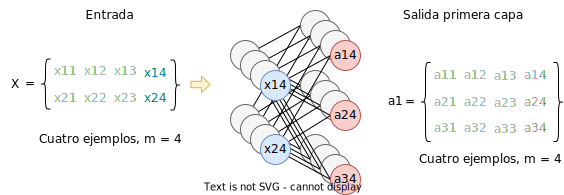

Dado un ejemplo \(X\), tal que \(X\) es un vector fila \(1 \times 3\):
\[%align x = \begin{bmatrix}x_1 & x_2 & x_3\end{bmatrix} \]Tenemos que las entradas a la red neuronal con un capa se introducen como sigue:
De tal manera que obtenemos una salida \(h_\Theta(x)\), esta función se denomina función de activación
Supongamos que utilizamos la función sigmoide (problema de clasificación con dos clases):
\[%align h_\Theta(X) = \frac{1}{1+e^{-\Theta^TX}} \]- \(X = (x_{ij})\) una matriz \(n \times m\) donde cada \(x_{ij}\) es la característica \(i\) del ejemplo \(j\), tal que \begin{align} X = \begin{bmatrix} x_{11} & \cdots & x_{1m} \\ \cdots & \ddots & \cdots \\ x_{n1} & \cdots & x_{nm} \\ \end{bmatrix} \end{align}
Cada columna es un ejemplo
En cada fila están los valores de una característica
- \(Y = (y_j)\) es un vector fila \(1\times m\) donde cada \(y_j\) es la salida real para el ejemplo \(j\), tal que:
- \(k\) es el número de capas de la red
- Para cada capa \(j\), asumimos que la capa tiene \(q\) nodos.
- \(a_i^{(j)}\): Nodo \(i\) en la capa \(j\)
- \(\Theta^{(j)}\): Matriz de pesos de la capa \(j\) a la capa \(j+1\)
-
La dimensión de cada \(\Theta^{(j)}\) es \(S_{j+1} \times (S_j + 1)\)
- \(S_{j+1}\): número de características/nodos en la capa \(j+1\).
- \((S_j + 1)\): número de características en la capa \(j\) más 1 (término independiente en cada capa)
Sean \(k\) el número de capas de la red. Para cada capa \(j\), con \(0 \leq j \leq k\), supongamos que la capa tiene \(q\) nodos. Con \(a^0 = X_l\) (donde \(X_l\) es un ejemplo: un vector columna en \(X\)):
Primero se calcula el término intermedio \(z^{(j)}\), que es un vector columna \(q \times 1\):
\begin{align} z^{(j)} = \Theta^{(j)} \cdot a^{(j-1)} \end{align}Donde, como ya hemos dicho, \(\Theta\) es la matriz \(q \times p\) de pesos de la capa \(j\), siendo \(p\) el número de nodos en la capa \((j-1)\) más uno (el término independiente).
A continuación se aplica sobre \(z^{(j)}\) la función de activación, tal que:
\begin{align} a^{(j)} = g(z^{(j)}) \end{align}Esto se representa gráficamente en la siguiente imagen:
Cabe destacar que la función de activación de la última capa suele ser distinta al resto. De todas formas, las funciones de activación no tienen por qué ser iguales, nosotros en estes ejemplos hemos utilizado la función sigmoide, pero depende de la aplicación que se le quiera da a la red neuronal.
Para crear una red neuronal que permita trabajar con \(c\) clases lo que hacemos es hacer que la red neuronal tenga \(c\) nodos en su capa de salida. Esto se ilustra en la siguiente imagen:
De tal manera que ahora, cada salida \(y_j\) será un vector columna \(c\times1\), donde existe un valor por cada categoría, al igual que la hipótesis para el ejemplo \(j\), \(h_\Theta(x_j)\), es un vector columna \(c\times1\).
Como podemos ver, los valores de \(y_j\) indican claramente a qué clase pertenece el ejemplo \(j\) (clase 3), mientras que la hipótesis \(h_\Theta(x_j)\) ofrece, para cada clase (columna) la probabilidad de que el ejemplo \(j\) pertenezca a esa clase.
Como ya hemos visto en función del número de clases la salida tendrá distinta forma:
- Clasificación binaria: para cada ejemplo \(j\), \(y_j \in \{0, 1\}\), \(h_\Theta(x_j) \in \mathbb{R}\)
- Clasificación múltiple: para cada ejemplo \(j\), \(y \in \mathbb{R}^c\), \(h_\Theta(x_j) \in \mathbb{R}^c\), donde \(c\) es el número de clases
- Sea \(k\) el número de capas y \(S_i\) el número de nodos en la capa \(i\).
- Sea \(Y=(y_{ij})\) una matriz \(c\times m\), donde \(m\) es el número de ejemplos y cada \(y_{j}\) es el vector columna \(c\times1\) de salida para el ejemplo \(j\).
Definimos la función de coste como sigue:
\begin{align} J(\Theta) = - \frac{1}{m} \left\{ \sum_{j=1}^m \sum_{i=1}^c [y_{ij}\cdot \log(h_\Theta(x_j)_i)] + [(1-y_{ij})\cdot \log(1-(h_\Theta(x_j)_i))]\right\} \end{align}El primer sumatorio que va de 1 a \(m\) se encarga de calcular el coste para cada ejemplo \(j\). Mientras que el segundo sumatorio, que va de 1 a \(c\), se encarga de calcular el coste para cada nodo de salida.
Esta función se aplica sobre los \(k\) nodos en la capa de salida. Tal que, por ejemplo para la figura anterior tenemos que \(c=3\), y la hipótesis tiene los valores:
\begin{align} h_\Theta(x_1) = \begin{bmatrix} 0.02 \\ 0.1 \\ 0.88 \\ \end{bmatrix} \end{align}y la salida real para el ejemplo \(x_1\) tiene los valores:
\begin{align} y_1 = \begin{bmatrix} 0 \\ 0 \\ 1 \\ \end{bmatrix} \end{align}Entonces la función de coste se calcularía como (observa que esto es sólo para un ejemplo, por lo que obviamos el primer sumatorio):
\begin{align} J(\Theta) = - \sum_{i=1}^c [y_{ij}\cdot \log(h_\Theta(x_j)_i)] + [(1-y_{ij})\cdot \log(1-(h_\Theta(x_j)_i))] \end{align} \begin{align} J(\Theta) = - \{[(y_{11}\cdot\log(h_\Theta(x_1)_{1})) + (1-y_{11})\cdot\log(1-h_\Theta(x_1)_{1})] + \end{align} \begin{align} + [(y_{21}\cdot\log(h_\Theta(x_1)_{2})) + (1-y_{21})\cdot\log(1-h_\Theta(x_1)_{2})] + \end{align} \begin{align} + [(y_{31}\cdot\log(h_\Theta(x_1)_{3})) + (1-y_{31})\cdot\log(1-h_\Theta(x_1)_{3})]\} \end{align}Sustituimos los valores de cada vector:
\begin{align} J(\Theta) = - \{ [(0\cdot\log(0.02)) + (1-0)\cdot\log(1-0.02)] + \end{align} \begin{align} + [(0\cdot\log(0.1)) + (1-0)\cdot\log(1-0.1)] + \end{align} \begin{align} + [(1\cdot\log(0.88)) + (1-1)\cdot\log(1-0.88)] \} = \end{align}Calculamos los valores:
\begin{align} J(\Theta) = - (\log(0.98) + \log(0.9) + \log(0.88)) \end{align} \begin{align} J(\Theta) = - (-0.009 - 0.046 -0.056) = - (-0.111) = 0.111 \end{align}Definimos la función de coste introduciendo regularización como sigue:
\begin{align} J(\Theta) = - \frac{1}{m} \left\{ \sum_{j=1}^m \sum_{i=1}^c [y_{ij}\cdot \log(h_\Theta(x_j)_i)] + [(1-y_{ij})\cdot \log(1-(h_\Theta(x_j)_i))]\right\} + \frac{\lambda}{2m} \sum_{q=1}^k \sum_{i=1}^{S_q}\sum_{j=1}^{S_{q+1}} (\theta_{ji}^{(q)})^2 \end{align}Antes de nada, recordar que \(S_q\) denota el número de nodos en la capa \(q\). Entonces, el primer término de la función es igual que cuando no se aplicaba regularización. Expliquemos el segundo término. La regularización, en este caso, consiste en sumar todos los pesos de la red neuronal, por lo tanto:
- Por cada capa \(q\), con \(1 \leq q \leq k\), sumamos todos los elementos de la matriz de pesos \(\Theta^{q}\), que como sabemos tiene dimensiones \(S_{q+1} \times S_q\)
-
Dada la matriz \(\Theta^{(q)}\)
- Recorremos cada columna \(i\), con \(1 \leq i \leq S_q\)
- Recorremos cada elemento \(j\) de la columna \(i\), con \(1 \leq j \leq S_{q+1}\)
- Sumamos al total cada elemento de la matriz \(\Theta^{(j)}_{ji}\)
- Una vez se han sumado todas las matrices de pesos obtenemos un escalar, que multiplicamos por \(\frac{\lambda}{2m}\)
- \(\delta^{(q)}_i\) denota el error del nodo \(i\) en la capa \(q\)
- \(a^{(q)}_i\) denota la salida del nodo \(i\) en la capa \(q\)
La salida de cada capa \(q\) es una matriz \(S_q \times m\), donde \(S_q\) denota el número de nodos en la capa \(q\) y \(m\) denota el número de ejemplos.
Como vimos en nuestras figuras, donde se presentaban los cálculos sólo para un ejemplo, en cada capa \(q\) podemos mapear la salida de los \(S_q\) nodos a un vector columna \(S_q \times 1\).
Si generalizamos esto a \(m\) ejemplos tenemos que la salida de cada capa es una matriz \(S_q \times m\). Esto se ilustra en la siguiente imagen:

Vamos, ahora a explicar cómo se aplica la retropropagación. Lo primero que debemos tener en cuenta es que este proceso se basa en la misma idea de optimización que la Regresión Lineal y la Regresión Logística, es decir, lo que queremos hacer es minimizar el coste, \(J(\Theta)\)
El problema es que debemos derivar \(\frac{\delta J(\Theta)}{\delta \Theta}\), donde \(\Theta\) ya no es una matriz, si no que es un tensor, es decir tenemos que calcular \(\frac{\delta J(\Theta)}{\delta \theta^{(k)}_{it}}\). Entonces, sabemos que la función de coste:
\[%align J(\Theta) = - \frac{1}{m} \left\{ \sum_{j=1}^m\sum_{i=1}^c (y_{ij}\cdot \log(h_\Theta(x_j)_i)) + [(1-y_{ij})\log(1-h_\Theta(x_j)_i)]\right\} \]Donde \(\theta_{it}^{(k)}\) es el peso que conecta el nodo \(i\) de la capa \(k\) con el nodo \(t\) de la capa \((k-1)\), es decir, es el elemento en la fila \(i\) columna \(t\) de la matriz de pesos de la capa \(k\), \(\Theta^{(k)}\).
Por la regla de la cadena, separamos la derivada de la función del coste en función de los pesos en dos términos:
\begin{align} \frac{\delta J(\Theta)}{\delta \theta_{it}^{(k)}} = \sum_{j=1}^m \sum_{i=1}^c \frac{\delta E^{(k)}}{\delta a_{ij}^{(k)}} \frac{\delta a_{ij}^{(k)}}{\delta \theta_{it}^{(k)}} \end{align}Procedemos a calcular la derivada:
\[%align \frac{\delta J(\Theta)}{\delta \theta_{it}^{(k)}} = \frac{\delta}{\delta \theta_{it}^{(k)}} \left(- \frac{1}{m}\right) \left\{ \sum_{j=1}^m\sum_{i=1}^c (y_{ij}\cdot \log(h_\Theta(x_j)_i)) + [(1-y_{ij})\log(1-h_\Theta(x_j)_i)]\right\} \]Sacamos el término constante de la derivada y aplicamos la propiedad: "La derivada de una suma equivale a la suma de las derivadas"
\[%align \frac{\delta J(\Theta)}{\delta \theta_{it}^{(k)}} = \left(- \frac{1}{m}\right) \sum_{j=1}^m\sum_{i=1}^c \frac{\delta}{\delta \theta_{it}^{(k)}} \left\{(y_{ij}\cdot \log(h_\Theta(x_j)_i)) + [(1-y_{ij})\log(1-h_\Theta(x_j)_i)]\right\} \]Sea \(h_\Theta(x_j) = a^{(k)}_j\), es decir la salida de la última capa para el ejemplo \(j\).
\[%align \frac{\delta J(\Theta)}{\delta \theta_{it}^{(k)}} = \left(- \frac{1}{m}\right) \sum_{j=1}^m\sum_{i=1}^c \frac{\delta}{\delta \theta_{it}^{(k)}} \left\{(y_{ij}\cdot \log(a^{(k)}_{ij})) + [(1-y_{ij})\log(1-a^{(k)}_{ij})]\right\} \]Sacaremos el término \(y_{ij}\) de la derivada y juntemos todas las expresiones:
\[%align \frac{\delta J(\Theta)}{\delta \theta_{it}^{(k)}} = \left(- \frac{1}{m}\right) \sum_{j=1}^m\sum_{i=1}^c \left\{y_{ij} \left(\frac{\delta}{\delta \theta_{it}^{(k)}} \log(a^{(k)}_{ij}) \right) + (1-y_{ij}) \left(\frac{\delta}{\delta \theta_{it}^{(k)}} \log(1-a^{(k)}_{ij})\right)\right\} \]Aplicamos la regla de la cadena sobre el logaritmo:
\[%align \frac{\delta J(\Theta)}{\delta \theta_{it}^{(k)}} = \left(- \frac{1}{m}\right) \sum_{j=1}^m\sum_{i=1}^c \left\{y_{ij} \left(\frac{\delta \log(a_{ij}^{(k)})}{\delta a_{ij}^{(k)}} \frac{\delta a_{ij}^{(k)}}{\delta \theta_{it}^{(k)}} \right) + (1-y_{ij}) \left(\frac{\delta \log(1-a^{(k)}_{ij})}{\delta (1-a^{(k)}_{ij})} \frac{\delta (1-a^{(k)}_{ij})}{\delta \theta_{it}^{(k)}} \right)\right\} \]Como sabemos:
- \(\frac{\delta (1)}{\delta \theta_{it}^{(k)}} = 0\), entonces
- \(\frac{\delta(1-a_{ij}^{(k)})}{\delta \theta_{it}^{(k)}} = \frac{\delta (1)}{\delta \theta_{it}^{(k)}} - \frac{\delta a_{ij}^{(k)}}{\delta \theta_{it}^{(k)}} = 0 + (-1) \frac{\delta a_{ij}^{(k)}}{\delta \theta_{it}^{(k)}}\)
Entonces
\[%align \frac{\delta J(\Theta)}{\delta \theta_{it}^{(k)}} = \left(- \frac{1}{m}\right) \sum_{j=1}^m\sum_{i=1}^c \left\{y_{ij} \left(\frac{\delta \log(a_{ij}^{(k)})}{\delta a_{ij}^{(k)}} \frac{\delta a_{ij}^{(k)}}{\delta \theta_{it}^{(k)}} \right) + (1-y_{ij}) \left((-1)\frac{\delta \log(1-a^{(k)}_{ij})}{\delta (1-a^{(k)}_{ij})} \frac{\delta a^{(k)}_{ij}}{\delta \theta_{it}^{(k)}} \right)\right\} \]Sacamos \(\frac{\delta a_{ij}^{(k)}}{\delta \theta_{it}^{(k)}}\) como factor común y aplicamos el \((-1)\):
\[%align \frac{\delta J(\Theta)}{\delta \theta_{it}^{(k)}} = \left(- \frac{1}{m}\right) \sum_{j=1}^m\sum_{i=1}^c \frac{\delta a_{ij}^{(k)}}{\delta \theta_{it}^{(k)}}\left\{y_{ij} \frac{\delta \log(a_{ij}^{(k)})}{\delta a_{ij}^{(k)}} - \left((1-y_{ij})\frac{\delta \log(1-a^{(k)}_{ij})}{\delta (1-a^{(k)}_{ij})} \right)\right\} \]Sustituimos \(\frac{\delta E^{(k)}}{\delta a_{ij}^{(k)}} = \left\{y_{ij} \frac{\delta \log(a_{ij}^{(k)})}{\delta a_{ij}^{(k)}} - \left((1-y_{ij})\frac{\delta \log(1-a^{(k)}_{ij})}{\delta (1-a^{(k)}_{ij})} \right)\right\}\)
\[%align \frac{\delta J(\Theta)}{\delta \theta_{it}^{(k)}} = \left(- \frac{1}{m}\right) \sum_{j=1}^m\sum_{i=1}^c \frac{\delta E^{(k)}}{\delta a_{ij}^{(k)}} \frac{\delta a_{ij}^{(k)}}{\delta \theta_{it}^{(k)}} \]Si resolvemos las derivadas de los logaritmos obtenemos:
\[%align \frac{\delta E^{(k)}}{\delta a_{ij}^{(k)}} = y_{ij} \frac{\delta \log(a_{ij}^{(k)})}{\delta a_{ij}^{(k)}} - (1-y_{ij})\frac{\delta \log(1-a_{ij}^{(k)})}{\delta (1-a_{ij}^{(k)})} \]Nos centraremos ahora en la derivada que nos falta \(\frac{\delta a_{ij}^{(k)}}{\delta \theta_{it}^{(k)}}\):
Sabemos que, vectorizando la operación, \(a^{(k)}_j = g(z^{(k)}_j)\), donde \(g\) es la función de activación (en este caso sigmoide).
Además:
\[%align z^{(k)}_j = \Theta^{k} \cdot a^{(k-1)}_j \]Por lo tanto, para cada nodo \(i\) en la última capa \(k\):
\[%align z^{(k)}_{ij} = \sum_{l=1}^{S_{(k-1)}} \theta^{(k)}_{il} \cdot a^{(k-1)}_{lj} \]Donde \(S_{(k-1)}\) es el número de nodos en la capa \(k-1\). Entonces, aplicamos de nuevo la regla de la cadena:
\[%align \frac{\delta a_{ij}^{(k)}}{\delta \theta_{it}^{(k)}} = \frac{\delta g(z_{ij}^{(k)})}{\delta z_{ij}^{(k)}} \frac{\delta z_{ij}^{(k)}}{\delta \theta_{it}^{(k)}} \]Resolvemos la derivada para el segundo término:
\[%align \frac{\delta z_{ij}^{(k)}}{\delta \theta_{it}^{(k)}} = \sum_{l=1}^{S_{(k-1)}} \frac{\delta}{\delta \theta_{it}^{(k)}} \theta^{(k)}_{il} \cdot a^{(k-1)}_{lj} \]Tal que:
\[%align \frac{\delta}{\delta \theta_{it}^{(k)}} \theta^{(k)}_{il} \cdot a^{(k-1)}_{lj} = \begin{cases} a_{lj}^{(k-1)}, & t = l \\ 0, & t \neq l \\ \end{cases} \]Por lo tanto, como sólo hay un \(l\) con \(l = t\) donde \(1 \leq l \leq S_{(k-1)}\), entonces:
\[%align \frac{\delta z_{ij}^{(k)}}{\delta \theta_{it}^{(k)}} = a_{lj}^{(k-1)} = a_{tj}^{(k-1)} \]Juntamos ambos términos de la derivada inicial, con \(\frac{\delta g(z_{ij}^{(k)})}{\delta z_{ij}^{k}} = \sigma'(z_{ij}^{(k)})\)
\[%align \frac{\delta a_{ij}^{(k)}}{\delta \theta_{it}^{(k)}} = \frac{\delta g(z_{ij}^{(k)})}{\delta z_{ij}^{(k)}} \frac{\delta z_{ij}^{(k)}}{\delta \theta_{it}^{(k)}} = \sigma'(z_{ij}^{(k)}) a_{tj}^{(k-1)} \]Vamos a resumir lo que tenemos hasta ahora. Por la regla de la cadena, separamos la derivada de la función del coste en función de los pesos en dos términos:
\begin{align} \frac{\delta J(\Theta)}{\delta \theta_{it}^{(k)}} = \sum_{j=1}^m \sum_{i=1}^c \frac{\delta E^{(k)}}{\delta a_{ij}^{(k)}} \frac{\delta a_{ij}^{(k)}}{\delta \theta_{it}^{(k)}} \end{align}Si sustituimos ambos términos, para la capa de salida \(k\):
\[%align \frac{\delta J(\Theta)}{\delta \theta_{it}^{(k)}} = \left(- \frac{1}{m}\right) \sum_{j=1}^m\sum_{i=1}^c \sigma'(z_{ij}^{(k)}) a_{tj}^{(k-1)}\left\{ \frac{y_{ij}}{a_{ij}^{(k)}} - \left(\frac{(1-y_{ij})}{(1-a^{(k)}_{ij})} \right)\right\} \]Pero, ¿cómo calculamos el gradiente para los pesos de las capas intermedias?, es decir, cómo calculamos:
\[%align \frac{\delta J(\Theta)}{\delta \theta_{it}^{(q)}} \]Donde \(q\) denota la capa, con \(1 \leq q \leq (k-1)\). Bien, haciendo referencia a la sección de notación, tenemos que \(\delta_i^{(q)}\) es el error del nodo \(i\) en la capa \(q\). Sea \(q = k - 1\), tenemos que: